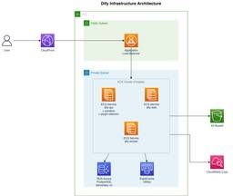
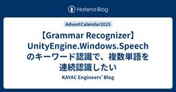
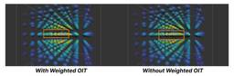
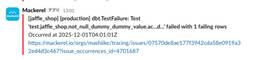
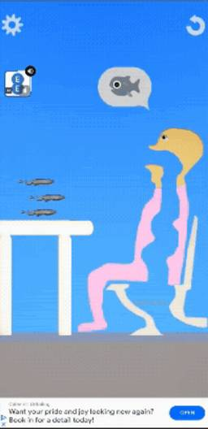

KAYAC Engineers' Blog
https://techblog.kayac.com/
カヤックのエンジニアがサービスの開発や運用などで培ってきた技術などの情報をまとめたブログです。WebやiOS、Androidの技術情報だけではなく、最新のデバイス、VR、Unity、インフラストラクチャなどのさまざまな最新技術についても毎週紹介していきます！
フィード

AIを使ってUnreal Engine内のアセットを自然言語で検索したい 1
1
KAYAC Engineers' Blog
本記事は面白法人グループ Advent Calendar 202513日目の記事です。 はじめに こんにちは。カヤックの伊藤です。 普段はUnreal Engineを用いたバーチャル撮影ツールJEANNE D'ARCの開発や、AIを用いた作業効率化ツールの開発を行っています。 Unreal EngineやUnity等のゲーム開発エンジンを触っていて、 「あのアセット、どこのフォルダにあったっけ……？」 「テキストで検索しようにも変な名前を付けていた気が……分からん」 といった現象に陥ることはないでしょうか。 そこで、今回はUnreal Engineを対象に、言語と画像のマルチモーダルモデルであ…
14時間前

セルフホストDifyアプリケーションにアクセスできるドメインを制限したい 3
KAYAC Engineers' Blog
技術部の小池です。 この記事は面白法人グループ Advent Calendar 2025の12日目の記事です。 AWSでDifyをセルフホストした際のアクセス制限についての取り組みを紹介します。 Difyのセルフホスト版におけるアクセス制限問題 DIfyはノーコードで生成AIアプリケーションを構築できるプラットフォームです。SaaS版とセルフホスト版があり、セルフホスト版ではインフラコストはかかるものの、Dify自体は無料で利用することができます。 セルフホスト版では、メールサーバの設定を未設定にしておくことで事前に招待したユーザのみDifyの画面にアクセスできるよう制限することができます。一…
2日前

【Grammar Recognizer】UnityEngine.Windows.Speechのキーワード認識で、複数単語を連続認識したい
KAYAC Engineers' Blog
この記事は面白法人グループAdvent Calendar 202510日目の記事です。 こんにちは。 カヤックボンドでエンジニアをやっております青木です！ 今回は、Unity + Windows環境で利用できる音声認識 UnityEngine.Windows.Speech で行うキーワード認識について、基本的な使用方法と複数単語をテンポ良く認識させる方法を記事化してみました！ 目次 はじめに UnityEngine.Windows.Speech 3つの認識方式 最も簡単に使えるKeywordRecognizerとその欠点 よりテンポ良く認識可能なGrammarRecognizer まとめ はじ…
4日前
Webサイトを作るように紙パックを企画したら300万本売れるヒット作になった話 ～UX視点で見る『ミルクの束縛』～ 258
KAYAC Engineers' Blog
束縛束縛本記事は、面白法人グループ Advent Calendar 2025 の9日目の記事です。束縛束縛 こんにちは。面白法人カヤックでディレクターをしている合田ピエール陽太郎です。 www.kayac.com束縛束縛束縛束縛束縛束縛束縛束縛束縛束縛束縛束縛束縛束縛束縛束縛束縛 みなさんは、『ミルクの束縛』という飲み物をご存知でしょうか？「名前、激強でわらった」「パッケージのインパクトすごい」とSNSでも話題にしていただいているパッケージ、実は普段Web制作をしているカヤックが、Webページを制作する考え方でディレクションしました。今日は、その裏側をお話しします！ ミルクの束縛ミルクコーヒー…
4日前

Unity URPで実装するWeighted OIT - 透明オブジェクト描画の順序依存問題を解決する 3
KAYAC Engineers' Blog
本記事は 面白法人グループ Advent Calendar 2025 の8日目の記事です。 1. 概要 こんにちは！カヤック技術部の高石です。 本記事では、Weighted Order Independent Transparency（以下 Weighted OIT）というレンダリング技術をUnity上で実装し、多数の透明オブジェクトをより正確に描画する方法を紹介します。以下に、最終的なWeighted OITと、シンプルな AlphaBlend の描画結果を示します。見た目は地味に見えるかもしれませんが、実装すると微妙な色のフェード感が正しい前後関係の表現に寄与していることが分かります。 W…
6日前

MackerelでSelf-hosted dbt Fusion(preview)の監視をやってみる 2
KAYAC Engineers' Blog
こんにちは、グループ情報部の@mashiikeです。 この記事は Mackerel Advent Calendar 2025とdbt Advent Calendar 2025 の7日目の記事です。 qiita.com qiita.com はじめに この記事は、２つのAdvent Calendarにまたがった記事となるので、それぞれについて簡単に説明します。 dbt Fusion www.getdbt.com dbt は、データウェアハウス上のデータを「SQL＋コード」で変換・整形・モデリングするOSSのツールです。分析用テーブルの整形や集約、履歴テーブルの作成などを、SQLで記述し、依存関係を…
7日前
LT発表してよかった事振り返り
KAYAC Engineers' Blog
面白法人グループ Advent Calendar 2025 の7日目の記事になります。 カヤックボンドでエンジニアをやっております志村と申します。 今回は積極的にLT（ライトニングトーク）を発表した事で得た学びについて記事にしてみました！ 〇 結論 〇 LTのタイミングに関して 〇 記憶の定着 ■ インプット数の増加 ■ アウトプット数の増加 〇 情報資産としても残る 〇 社内LTをしてみようかな？と思った人へ ■ 思い立ったが吉日、まずは参加登録を ■ 最初は小ネタや紹介程度でもOK ■ 短い時間を味方につける 〇 まとめ ■ LT会発表タイトル 一部抜粋 〇 結論 半強制的にインプットしよ…
7日前

ハイパーカジュアルゲームにオーディオ広告を導入してみた 2
KAYAC Engineers' Blog
こんにちは！カヤック技術部の千葉です。 本記事は、面白法人グループ Advent Calendar 2025 の6日目の記事です。 実は 12/7(日)に湘南国際マラソンに出走する直前ということもあり、気持ちは落ち着きませんが、記事を書きます。 湘南国際マラソンでは、今年もゴール付近に42.195km採用のブースを出展しています。完走したランナーの皆様、ぜひブースに立ち寄ってみてください！ さて今回は、カジュアルチームで導入検証している「オーディオ広告」の紹介と、その導入効果について書いていきたいと思います。 オーディオ広告 オーディオ広告とは、Spotifyやradikoを始めとする、ポッド…
8日前

C#でオリジナルコーディングエージェントをつくってみよう
KAYAC Engineers' Blog
この記事は 面白法人グループ Advent Calendar 2025 の5日目の記事です。 はじめに こんにちは！技術部の村上です。 普段はUnityを用いてハイパーカジュアルゲームを作っています。 近年の爆発的な進歩により、AIはもはや日々の開発に欠かせない存在になってきました。中でも今年に入ってからのコーディングエージェントの発展には目を見張るものがあります。 カヤックのハイパーカジュアルゲームチームでは、全員がAIを積極的に利用できるよう制度が整備され、Claude Codeを始めとしたコーディングエージェントを活用して日々開発が行われています。 ところで、コーディングエージェントって…
9日前
超！個人的リモートワークのコツ 〜運動と太陽と私と仕事〜
KAYAC Engineers' Blog
こんにちは！カヤックのけいとです。こちらは面白法人グループAdvent Calendar4日目の記事です。 リモートワークはつらいよ 弊社は基本出社義務がある会社です。何をするかより、誰とするか。その社風を表す制度ともいえる就業規則の一つであるといえるでしょう。 そんな中でも例外というものはありまして、私は業務上の理由につき基本リモートワークでの就業をしています。 それまで出社での勤務しか経験していなかった私は、リモートワークになることについて「まあ、働く場所が変わるだけでしょ」と非常に楽観的な心持ちでした。 しかし、約三ヶ月が経った今。 リモートワークならではのつらさが出るわ出るわ。 そんな…
10日前
入門 読書
KAYAC Engineers' Blog
みなさんごきげんよう。カヤック技術部の rtshaaaa といいます。 この記事は面白法人グループAdvent Calendar3日目の記事です。 読書はだいじ 突然ですが皆さん、本は読んでいますか？ 私は一年におおよそ100冊程度は読んでいます。 こういった話を身近な人にすると、一体どうやってそんなに読んでいるんだと、驚かれることがあります。 ある年の文化庁による調査によると、日本人の年間平均読書量は12冊程度ということですから、確かに私は人と比べてとても読書量が多いようです。 これだけ沢山の本を読んでいるのは単純に読書が好きだから、ということもありますが、読書によって得られるメリットが多い…
11日前
爆破解体予定だったレガシーサーバーの転生
KAYAC Engineers' Blog
カヤック技術部の竹田です この記事は面白法人グループAdvent Calendar 20252日目の記事になります ちょうど1年前の2024/12/2の記事 レガシーサーバーをコンテナで再構築した、その5年後の移行と解体 の報告です。 爆破解体(未完)のその後を書くぞ！ これまでのあらすじ ここ数年に渡り社内のサービスを近代化・廃止してきた レガシーサーバーを現代の技術で再構築（6年前） この際廃止できるものは廃止してついでに運用コストも削減。必要なものはCloudFront + Lambda + S3 で構築し直した (1年前） 最終的に Redmine だけが残り、爆破解体待ちの状態となっ…
12日前
サンドボックスとしてWebAssemblyを使ってみた 〜コードゴルフコンテストAnybatrossの裏側〜
KAYAC Engineers' Blog
こんにちは！ カヤックの谷脇です。この記事は面白法人グループAdvent Calendar1日目の記事です。初日から飛ばしていくぞ〜〜！ Anybatrossとは YAPC::Fukuoka 2025に合わせてカヤックが行ったコードゴルフコンテストとそのサイトです。YAPC::Hiroshima 2024から数えて3回目です。詳しくはこちら。 techblog.kayac.com このサイトでは、参加者への課題として仕様を満たすプログラムを書くように求められており、そのプログラムコードの総バイト数が少ければ少ないほどランキングが上位にいくというものでした。いわゆるコードゴルフですね。 ちなみに…
13日前
【カヤック】面白法人グループ Advent Calendar 2025 が始まります！！
KAYAC Engineers' Blog
こんにちは！カヤックの伊藤です。暑い夏が終わり短い秋から急に冬に入ったかと思うと、早くも年の瀬ですね。 12月といえば毎年恒例「面白法人グループ Advent Calender」を今年も実施いたします！ 4回目となる今年も、グループ会社と共にAdvent Calenderを盛り上げていきます！ 例年通り、毎日こちらのはてなブログに投稿していきますのでバラエティー豊富な記事に是非ご期待ください！ また、以下のQiitaカレンダーにも公開次第逐一記事リンクを追加していきます！！ qiita.com 去年のブックマーク上位3記事 今年も去年度Advent Calenderにて公開された記事の中から、…
15日前
Kanagawa.swift #2 がカヤックオフィスで開催されました #kanagawa_swift
KAYAC Engineers' Blog
技術部の小池です。 11/2(日)にカヤック鎌倉オフィスにてKanagawa.swift #2が開催されました。 japan-region-swift.connpass.com カヤック鎌倉オフィス開催のきっかけ SwiftコミュニティであるJapan-\(region).swiftの皆さんからKanagawa.swiftの第2回の開催場所を探しているとのことでご相談をいただいたのがきっかけです。 カヤックでは土日や平日夜にオフィスをテックイベント向けに提供する活動を行っています。 Kanagawa.swiftでは筋トレのような体を使ったコンテンツもあるとのことで、ぼくらの会議棟を会場とし、空…
1ヶ月前
コードゴルフコンテスト Anybatross YAPC::Fukuoka 2025 開催のお知らせ
KAYAC Engineers' Blog
技術部の谷脇です。皆様いかがお過ごしでしょうか。今回は素敵なオンラインイベントのお知らせです。どなた様でも参加できますのでぜひご参加ください。YAPC::Fukuoka 2025に参加されない方でも参加可能です。 コードゴルフコンテスト PerlAnybatross を開催します！ perlbatross.kayac.com ルールは簡単。与えられた仕様を満たすプログラムをいかに短く書けるかを競うコードゴルフコンテストです。ここで言う"短く"はバイト数なので、改行やスペースも含みます。 今回からPerl以外にもRuby,Python,JavaScript,PHPで提出可能です。真のトップを目指…
1ヶ月前
カヤックはYAPC::Fukuoka 2025にスポンサーしています&社員が登壇します。あのイベントもやります！ #yapcjapan
KAYAC Engineers' Blog
技術部の谷脇です。テックカンファレンスイベントへのスポンサーと登壇、それからこちらのカンファレンスに合わせたイベントのご紹介です。 YAPC::Fukuoka 2025にスポンサーしています！ yapcjapan.org YAPC::Japanは始まりこそPerlをベースとしたコミュニティの技術カンファレンスでしたが、昨今はバラエティ豊かなトークが話されています。私の印象ですが、Perlを昔から使っている方は特定の技術を深く掘って極める人も多いので、YAPCでもディープなトークが話されているなあと感じます。ご興味がある方はチケット販売が10月31日までですのでぜひ購入の上ご参加ください。特に九…
1ヶ月前
Kanagawa.swift #2 が11/2(日)にカヤックオフィスで開催されます
KAYAC Engineers' Blog
技術部の小池です。 11/2(日)にカヤック鎌倉オフィスにてKanagawa.swift #2が開催されます。 SwiftやAppleプラットフォームの開発に興味がある方はぜひお気軽にご参加ください！ japan-region-swift.connpass.com 前回のKanagawa.swift #1の様子は以下の記事でご覧いただけます。 Kanagawa.swiftを開催しました！ Kanagawa.swiftにカメラマンとして参加しました #kanagawa_swift 当日はイベント企画に加え、鎌倉近郊のお菓子なども用意される見込みです。 Swiftの学びとともに、鎌倉の魅力もお楽し…
2ヶ月前
AWS Summit Japan 2025に参加してきました。
KAYAC Engineers' Blog
こんにちは。グループ情報部の池田（@mashiike）です。 先日の6/25、26に幕張メッセで開催されたAWS Summit Japan 2025に参加してきました。 今年も2日間とも参加しましたが、今年はやはり生成AIが大きな話題となっていました。 さて、AWS Summit Japanといえば、毎年恒例のElastic座布団クッションの配布があります。 今年ももちろんゲットしてきました。そこで、参加レポートという形で、今年のクッションが例年に比べてどうだったのかを考察します。 クッションの変遷 まずは、2023年・2024年のクッションと並べて比較した写真がこちらです。 ３年分のクッショ…
5ヶ月前
3年越しのデータ基盤安定化プロジェクトを終えて -Techサイド編
KAYAC Engineers' Blog
こんにちは。グループ情報部の 池田(@mashiike) です。 2019年から、面白法人カヤックと『北欧、暮らしの道具店』を運営する株式会社クラシコムとの協業プロジェクトとして、伴走型支援を行っており、その一環としてデータ基盤の開発・保守運用を行っております。 そして、3年前から「データ基盤安定化プロジェクト」として、クラシコム様のデータ基盤の大きな構造変化を継続して行ってきました。 www.kayac.com note.com この度、そのデータ基盤安定化プロジェクトが一旦の終了を迎え、その内容に関する記事がクラシコム様のNoteにて公開されました。 note.com 本記事では技術的な観…
6ヶ月前
GitHub Actionsの外部ActionでVersionTagを使ってるものを一括でCommitHashにしたい。
KAYAC Engineers' Blog
こんにちは。今年からグループ情報部という部署にいる 池田(@mashiike) です。 背景 先日、GitHub Actionsの tj-actions/changed-files にセキュリティインシデントがありました。実は、 reviewdog/action-setup 経由らしいという話が直近の話題です。 nvd.nist.gov www.wiz.io サプライチェーン攻撃が本格的に心配になってきた今日このごろです。 さて、このような状況で、GitHub Actionsの外部actionへの攻撃に対する対策はどうしたら良いのでしょうか？ そんなとき、ちょうど次の記事が公開されまして、「へ…
9ヶ月前
【JS体操】応援ありがとうございました！〜全5問の振り返り〜
KAYAC Engineers' Blog
面白法人カヤックが主催する JavaScript のコードゴルフ大会『JS体操』の全5問を、作問の裏話とあわせて振り返ります！
1年前
【Go】テーブル駆動テストのエラーチェックは関数パターンがおすすめ
KAYAC Engineers' Blog
記事公開時点ではSREの市川です。 というのも2024年の大晦日を以て退職となるのですが、実は【カヤック】面白法人グループ Advent Calendar 2024の7日目の記事をすっぽかしていたので、Go におけるテストの話を書いて置き土産といたします。 ケーススタディ 以下のようなSUT(テスト対象)があるとします。 package foo func DoSomething(input string) int { // 何かしらの処理 } この限りでは、SUTがエラーを返さないのでエラーチェックの必要はありません。つまり、以下のようなテストコードを書くことができます。 package fo…
1年前
ありがとうを、実装で
KAYAC Engineers' Blog
この記事はTech KAYAC Advent Calendar 2024の10日目の記事です。 皆さん、2024も終わりますね。メリークリスマス。良いお年を！ 「ぼくらの甲子園！ポケット 高校野球ゲーム」はご存知でしょうか？ 略して「ぼくポケ」は、株式会社カヤックのソシャールゲームのオリジナルIPです。 来年をもってサービス終了させていただきますが、運営開始するからなんと長い10年間もサービスを提供しております。 その長い10年間の5分の1、ゲームの終盤に、私ikkakukuku、Unityエンジニアーとして勤めさせていただきました。 優秀な先輩たちから色々優しく教えていただいて、その短い間の…
1年前
天下一甲子園 〜10周年でサービス終了するソシャゲに打ち上げる最後の花火〜
KAYAC Engineers' Blog
この記事はTech KAYAC Advent Calendar 2024の25日目の記事です。 こんにちは、@commojunです。 www.kayac.com 私がサーバサイドエンジニアとしてずっと従事してきたソーシャルゲームサービス「ぼくらの甲子園！ポケット」が、2025年1月8日でサービスを終了します。 prtimes.jp ぼくらの甲子園！ポケット（以下ぼくポケ）開発チームでは、これまで遊んでくださった皆様への感謝を伝えるため、2024年10月1日から、「天下一甲子園大会」という特別なイベントを開催していました。そしてつい数日前の12月22日、イベントのすべての内容が終了しました。 こ…
1年前
勝手にAIがプログラム書いてくれたら嬉しくない?
KAYAC Engineers' Blog
この記事は【カヤック】面白法人グループ Advent Calendar 2024の24日目の記事です。 おはこんばんちは。らりです。 2週間前に給湯器が壊れ、水を浴びながら生きてます。 インフルエンザも流行ってるし仕方ないですね。 はじめに 近年ではAIが進化し、もはや人間と区別がつかなくなってきました。 昨今のAIについては色々議論が巻き起こっていますが、本当に仕事を奪われそうでSFじみてきましたね。 ロボット工学三原則には「仕事を奪ってはならない」とは無いので、どこかで付け足されるのでしょうか。 ところで、簡単なプロジェクトを淡々とAIに作ってもらう検証をしてみました。 お題は電卓で、色々…
1年前
Function URLsとIPv6リクエストで実現するケチケチLambda活用術
KAYAC Engineers' Blog
この記事は 【カヤック】面白法人グループ Advent Calendar 2024 の 23日目の記事です。 カヤック技術部の谷脇です。さて、皆さんはAWS Lambdaが非常に安く使えることをご存知でしょうか？ Lambdaは1ヶ月あたり100万回のリクエストと総実行時間320万秒が無料です。これを超えたとしても非常に安く使えることが知られています。 例えばWebアプリケーションサーバーを例に出すと、ECSなどと違いリクエストドリブンであるという点は考慮する必要があるものの、シンプルな管理画面や社内ツールであればLambdaで十分に実装できます。 一方で罠も存在します。使おうとしたら余計にか…
1年前
【Go】HTTP/2とHTTP/3を試してみて感じたこと
KAYAC Engineers' Blog
はじめに この記事は【カヤック】面白法人グループ Advent Calendar 2024の２２日目の記事です。 こんにちは、カヤックボンド所属のサーバーサイドエンジニアの有馬と申します。 本記事のテーマは2022年6月6日に標準化されたHTTP/3についてです。 業務内でHTTP/2のソケット通信について触れる機会があり、「そういえば、HTTP/2とかHTTP/3についてあまり知らないな～」と実感したため、 本記事を書きたいと思いました。 本記事ではO'Reilly Japanさんの「Real World HTTP」 を参考にし、実際にコードを実装してみた所感を書いていきます。 www.or…
1年前
SMOUTリニューアルでカルーセルライブラリにEmbla Carouselを採用した話
KAYAC Engineers' Blog
この記事は【カヤック】面白法人グループ Advent Calendar 2024の21日目の記事です 🍊 みなさま初めまして！ウェブフロントエンジニアのbobです！ www.kayac.com 今回は、カヤックが提供している移住スカウトサービスSMOUTを先日一部リニューアルをした際に、カルーセル周りの刷新・実装をしましたのでそこで得た知見などを書かせていただきます。 この度移住スカウトサービスSMOUTを大リニューアルしました！ つい先日、カヤックが提供している移住スカウトサービス「SMOUT」を一部リニューアルしたものをリリースいたしました！ SMOUTは移住したい人と移住してきて欲しい人…
1年前
Meta Quest 3で色んなMR作ってみた！マルチプレイからストアリリース、仕事での活用まで
KAYAC Engineers' Blog
この記事はTech KAYAC Advent Calendar 2024の20日目の記事です。 面白プロデュース事業部 技術部の藤澤です。 この記事は、2024年実施してきたMRに関する3つの取り組みのご紹介と、それに関連するちょっとしたTipsをお話しする内容となっております。 マルチプレイMRコンテンツの開発 作るまでの背景 どんなものを作ったか Tips 同じ空間にモノを出す HMD間のマッチング、データ通信 マッチング データ通信 MRコンテンツのストアリリース リリースしたコンテンツのご紹介 Tips 伸縮する野菜 3Dモデル Unity クライアントワーク事業での活用 模型AR概要…
1年前